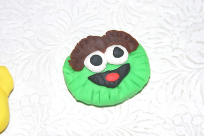

This gallery is full of play-doh creations that are sure to put a smile on your face. From animals to food to abstract designs, there's something for everyone. So take a look and enjoy!
Play-doh ducky complete with waves
(Unintentionally) marbled snowmen
Scary demon dude
Practicing some play-doh lettering

A cute little Oscar the Grouch!
My friend said this reminded him of a gargoyle
Used molds from a vintage My Little Pony set for these
So cute! play-doh icecream
Pokemon characters made from play-doh
Shrek Rotten Root Canal play-doh set I got for secret santa XD
George Foreman Grill play-doh Set - these molds are so detailed!